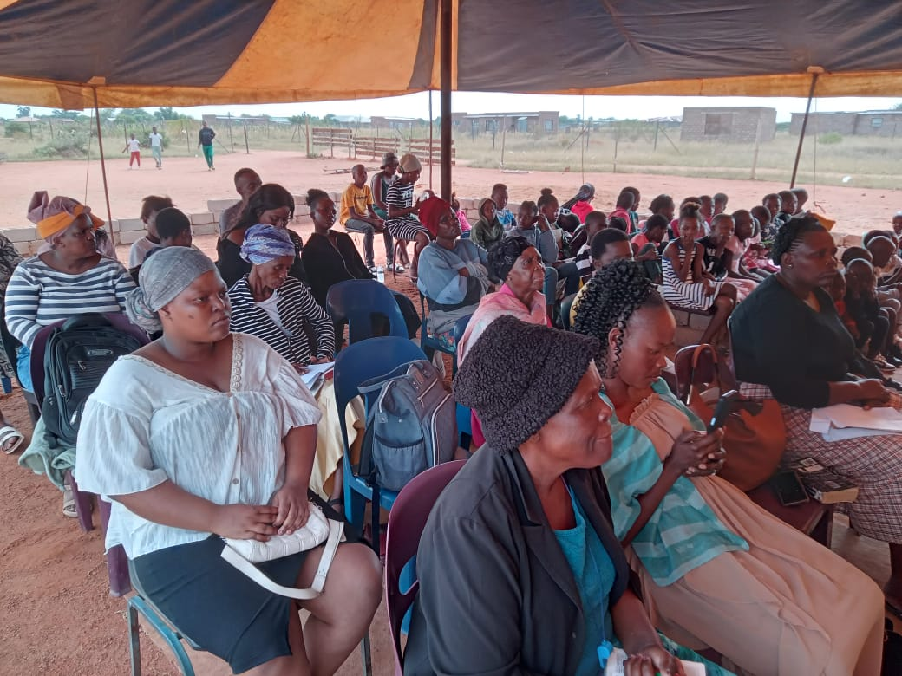

Sediba Sa Bophelo Prayer Tower was founded on the pillars of prayer, healing, and community support. Our journey began with a vision to create a spiritual home where everyone is welcome, and where faith is lived out through action, compassion, and unity.
We are committed to empowering individuals and families, nurturing spiritual growth, and serving our community with love and integrity. Join us as we continue to build a legacy of hope and transformation in Limpopo and beyond.